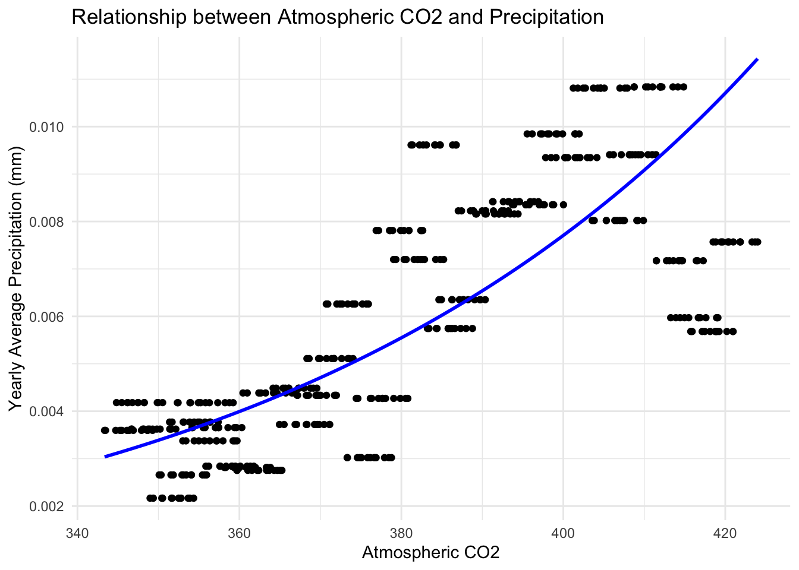

![]()
Open code
# Load required packages
library(here)
library(tidyverse)
library(ggplot2)
library(hockeystick)
library(kableExtra)
library(broom)December 13, 2024
On Halloween 1991, a massive blizzard hit Minnesota. This event has lived on in cultural infamy among Minnesotans. Of the 25 top snowfall events in Minnesota (from 1884-2023), only 5 of them occurred in the 21st century. There seems to be a trend away from high intensity snowfall events. This is a curious question: as the onset of climate change raises temperatures and increases the occurrence of extreme weather events, what does this mean for blizzards and intense snowfall events? Are there fewer intense snowfall events? Is that correlated to an increase in atmospheric CO2? And, if so, does that align with other trends we see in weather patterns?
As the general public becomes more worried about the reality of what a warming planet means for them, more research about how climate change might influence weather patterns is being conducted. There are studies analyzing what a warmer planet means for snowfall events, but these are mostly looking at worldwide trends. This analysis aims to see how this is working in Minnesota, a place where snow has a lot of cultural meaning.
In order to set up our notebook, we need to read in our essential packages. The packages needed for this analysis are here for reading in the data, hockeystick for accessing some of the data for this project, tidyverse and ggplot2 for cleaning, analyzing and visualizing the data, and kableExtra and broom for making our results neat.
To examine these questions, we will need to gather some important data: extensive weather and precipitation data from Minnesota, atmospheric CO2 concentration data, and some information about specific snowfall events.
The precipitation data came from NOAA’s National Centers for Environmental Information. While this platform has a huge volume of data from all over, you are only allowed to request said data in 10 year chunks. Therefore, the chunks of data I downloaded were: 1985/01/01 - 1994/01/01, 1994/01/02 - 2003/12/31, 2004/01/01 - 2013/12/31, and 2014/01/01 - 2023/12/31. The weather station where the data was recorded was the Minneapolis Saint Paul international airport, which is located in Southeast Minnesota.
The atmospheric co2 data comes from an R package called hockeystick. The package is very robust with all sorts of climate adjacent information. This includes atmospheric CO2, methane, emissions, instrumental and proxy temperature records, sea levels, Arctic/Antarctic sea-ice, Hurricanes, and Paleo climate data.
To make analysis easier, when we read in the data, we are going to do some cleaning immediately. We will use janitor to transform all of the column names in the the weather data to lower snake case. The data also comes with a lot of columns and observations of weather phenomena, but we are only interested in the hourly precipitation data, so we will drop all other columns. Additionally, for a few of the data, the hourly precipitation data is not numeric, so we will make sure to change that column to be of type numeric.
# Read in weather data
# 1985/01/01 - 1994/01/01
weather_1985_1994 <- read_csv(here('posts/2024-12-13-msp-weather/data/85-94.csv')) %>% # Read in csv
janitor::clean_names() %>% # convert column names to lower snake case
select(station, date, hourly_precipitation) %>% # select only columns we are interested in
mutate(hourly_precipitation = as.numeric(hourly_precipitation))
# 1994/01/02 - 2003/12/31
weather_1994_2003 <- read_csv(here('posts/2024-12-13-msp-weather/data/94-03.csv')) %>%
janitor::clean_names() %>%
select(station, date, hourly_precipitation) %>%
mutate(hourly_precipitation = as.numeric(hourly_precipitation))
# 2004/01/01 - 2013/12/31
weather_2004_2014 <- read_csv(here('posts/2024-12-13-msp-weather/data/04-14.csv')) %>%
janitor::clean_names() %>%
select(station, date, hourly_precipitation) %>%
mutate(hourly_precipitation = as.numeric(hourly_precipitation))
# 2014/01/01 - 2023/12/31
weather_2014_2023 <- read_csv(here('posts/2024-12-13-msp-weather/data/14-23.csv')) %>%
janitor::clean_names() %>%
select(station, date, hourly_precipitation) %>%
mutate(hourly_precipitation = as.numeric(hourly_precipitation))Reading in the co2 data is much simpler, because of the hockeystick package in R. To get more information about this package, read the package’s documentation here.
Now that we have both our precipitation and co2 data, we need to aggregate and filter the data for our analysis purposes.
First, we will combine the four chunks of weather data into one dataset. Then we will take that combined data and aggregate it to get the monthly average precipitation.
# Combine all datasets into one and add a period column
combined_weather_data <- bind_rows(
weather_1985_1994 %>% mutate(period = "1985-1994"),
weather_1994_2003 %>% mutate(period = "1994-2003"),
weather_2004_2014 %>% mutate(period = "2004-2014"),
weather_2014_2023 %>% mutate(period = "2014-2023")
)
# Aggregate data to get monthly precipitation
monthly_avg_combined <- combined_weather_data %>%
mutate(date = as.Date(date), # Ensure 'date' is in Date format
year_month = floor_date(date, "month")) %>% # Create year_month column --> floor_date from lubridate
group_by(period, year_month) %>% # Group by both 'period' and 'year_month'
summarize(monthly_avg_precip = mean(hourly_precipitation, na.rm = TRUE)) # Calculate monthly averageWe want to create an object for the specific date of the 1991 Halloween blizzard for visualization purposes.
Lastly, we want to filter the co2 data to only include the data from 1985 - 2023, our time frame of interest.
# Plot combined data
ggplot(monthly_avg_combined, aes(x = year_month, y = monthly_avg_precip, color = period)) +
geom_line() +
scale_x_date(date_labels = "%b %Y", date_breaks = "18 months") + # Format x-axis labels
labs(title = "Monthly Average Precipitation by Period",
x = "Date",
y = "Monthly Average Precipitation (mm)",
color = "Period") +
theme_minimal() +
theme(legend.position = "bottom",
axis.text.x = element_text(angle = 45, hjust = 1)) +
geom_vline(aes(xintercept = highlight_date), color = "black", linetype = "dashed", size = 0.3)# aggregate the monthly precipitation data to be yearly data so we can merge it with the yearly us emissions data
yearly_avg_precip <- monthly_avg_combined %>%
mutate(year = as.numeric(format(year_month, "%Y"))) %>%
group_by(year) %>%
summarize(yearly_avg_precip = mean(monthly_avg_precip, na.rm = TRUE))In order to visualize the relationship between the yearly average precipitation and atmospheric co2, we need to use a gamma regression rather than the classic linear regression.
# Gamma regression
gamma_model <- glm(yearly_avg_precip ~ average, data = precip_co2, family = Gamma(link = "log"))
summary(gamma_model)
Call:
glm(formula = yearly_avg_precip ~ average, family = Gamma(link = "log"),
data = precip_co2)
Coefficients:
Estimate Std. Error t value Pr(>|t|)
(Intercept) -1.144e+01 2.032e-01 -56.28 <2e-16 ***
average 1.643e-02 5.341e-04 30.77 <2e-16 ***
---
Signif. codes: 0 '***' 0.001 '**' 0.01 '*' 0.05 '.' 0.1 ' ' 1
(Dispersion parameter for Gamma family taken to be 0.0665279)
Null deviance: 91.015 on 467 degrees of freedom
Residual deviance: 33.274 on 466 degrees of freedom
AIC: -4794.3
Number of Fisher Scoring iterations: 5# Plot the data with regression line
ggplot(precip_co2, aes(x = average, y = yearly_avg_precip)) +
geom_point() +
geom_smooth(method = "glm",
method.args = list(family = Gamma(link = "log")),
se = FALSE,
color = "blue") +
labs(title = "Linear Relationship between CO2 Emissions and Precipitation",
x = "Atmospheric CO2",
y = "Yearly Average Precipitation (mm)") +
theme_minimal()
Now that we have our model, we will utilize hypothesis testing to evaluate how much we can rely on this model. To hypothesize on our gamma model, we will begin by formulating null and alternate hypotheses. The null hypothesis (or H0) is that there is no relationship between atmospheric co2 and precipitation, or in other words, the slope of the regression line is zero. The alternative hypothesis (or H1) is that there is a significant relationship between atmospheric co2 and precipitation, or in other words, the slope of the regression line is not zero.
To
results %>%
kable("html", caption = "Regression Model Results") %>%
kable_styling(bootstrap_options = c("striped", "hover", "condensed"), full_width = FALSE)| term | estimate | std.error | statistic | p.value |
|---|---|---|---|---|
| (Intercept) | -0.0276638 | 0.0012424 | -22.26657 | 0 |
| average | 0.0000883 | 0.0000033 | 27.05474 | 0 |
when we run this, we get 0.479 as the p value for the co2 variable. this is much higher than 0.05, which means we cannot reject the null hypothesis. for the full model significance, we have a p value of 0.4785 which is also not statistically significant.
2.5 % 97.5 %
(Intercept) -3.010518e-02 -2.522241e-02
average 8.190984e-05 9.474048e-05when we run our confidence interval for the intercept, we get [-0.008684769, 0.01287229] (for a 2.5%/97.5% split). this means that we can be 97.5% sure that the true intercept falls within that range. More importantly for our co2 variable we get [-1.277878e-06, 2.674409e-06]. This means that we are 97.5% confident that the true slope of the linear regression line for co2 is between that range, which includes zero. this simply further proves taht the slope is not significantly different from zero.
https://www.twincities.com/2021/10/29/remembering-the-1991-halloween-blizzard/ accessed 12/10
@online{peterson2024,
author = {Peterson, Liz},
title = {Analyzing Weather Trends in {Minnesota}},
date = {2024-12-13},
url = {https://egp4aq.github.io/posts/2024-12-10-msp-weather},
langid = {en}
}